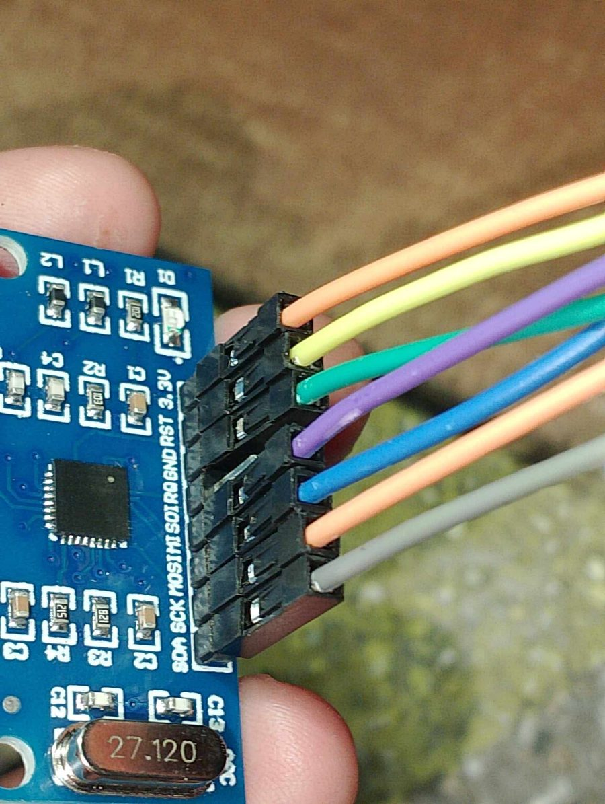
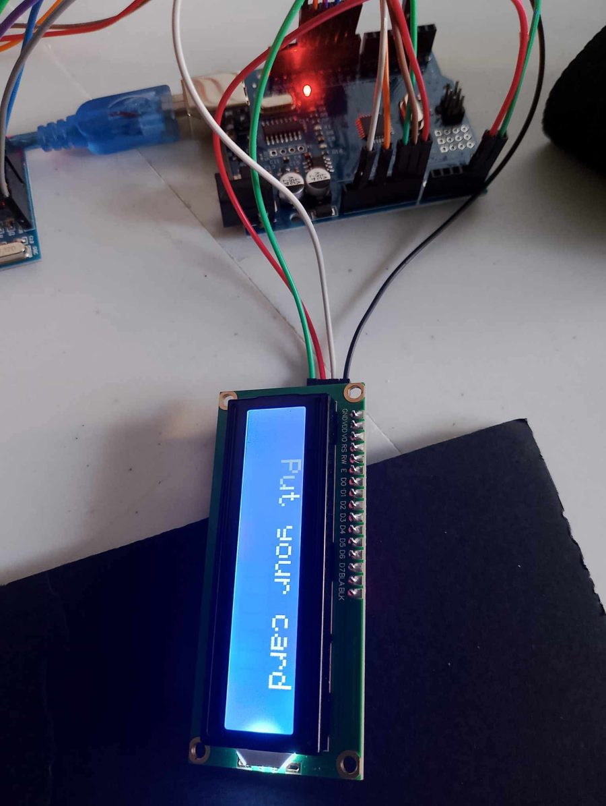
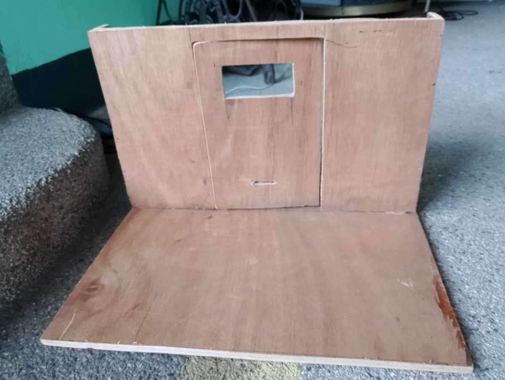
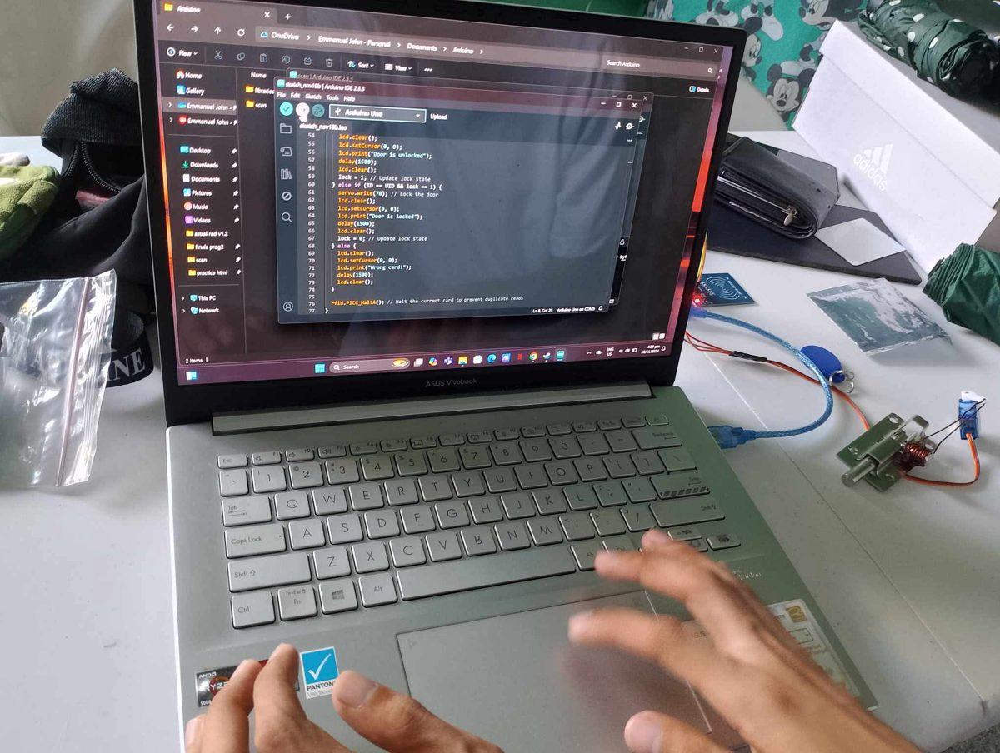

Arduino Uno
The microcontroller board that acts as the "brain". It runs our program, reads the card reader, and controls the screen and lock. It is connected to a laptop with a USB cable for power and uploading code.
Projects / Arduino Project
Arduino / Hardware DevelopmentA group academic project where we used an Arduino to build a small model door that locks and unlocks with an RFID card.
← Back to ProjectsOverview
This project explores basic electronics, hardware components, and programming using Arduino. The goal was to build something that works in real life: a door that only responds to an RFID card.
When a card is tapped on the reader, the Arduino reads the card's ID and compares it with the ID it knows. A matching card locks or unlocks the door, and the screen tells the user what happened. A card that doesn't match is rejected with a "Wrong card!" message.
Purpose: to demonstrate the practical application of technology and the development of a functional electronic project.
Hardware
The main parts that can be seen in our build.
The microcontroller board that acts as the "brain". It runs our program, reads the card reader, and controls the screen and lock. It is connected to a laptop with a USB cable for power and uploading code.
A small module that reads RFID cards and key tags (like the blue key tag in our photos) when they are held close. Each card has its own unique ID (UID).
A character display with two rows of 16 characters. It shows messages such as "Put your card", "Door is unlocked", "Door is locked" and "Wrong card!".
A small servo turns to move the latch bolt, which locks or unlocks the door. The Arduino tells the servo which angle to move to.
A plywood base and wall with cut-outs for the door, the LCD screen and the card reader. It holds the parts together and makes the project look like a real door entry.
Colored wires that connect the reader, screen and servo to the Arduino without soldering, so the circuit is easy to build and fix.
The logic
A simple loop that repeats all the time.
The LCD shows Put your card while the Arduino keeps checking the RFID reader.
When a card is tapped, the RC522 reader sends its unique ID (UID) to the Arduino.
The program compares the scanned UID with the one stored in the code.
If the card matches and the door is locked, the servo moves the latch and the LCD shows Door is unlocked. Tapping the same card again moves the latch back and shows Door is locked. The program remembers the current state in a lock variable.
If the UID doesn't match, the door doesn't move and the LCD shows Wrong card!.
The program tells the reader to stop reading the current card (PICC_HaltA()) so the same card isn't read twice by accident.
Wiring
The reader has 8 pins. These are the labels printed on our module, and what each one is for.
| Pin | What it does |
|---|---|
3.3V | Power supply for the module (3.3 volts) |
GND | Ground (0 V) connection |
RST | Reset pin |
IRQ | Interrupt pin (optional, not always used) |
MISO | SPI data going from the module to the Arduino |
MOSI | SPI data going from the Arduino to the module |
SCK | SPI clock signal |
SDA | Chip select (SS) when using SPI |
Tip we learned: the RC522 works at 3.3 V, so it should be powered from the Arduino's 3.3V pin, not 5V.
Behind the scenes
Click a photo to enlarge it.






Takeaways
How to connect modules to a microcontroller using the correct pins and voltage.
Using variables, conditions (if / else) and libraries to control hardware.
Checking wires, uploading code and testing again until each part works.
Dividing the work between building the case, wiring the circuit and writing the code.